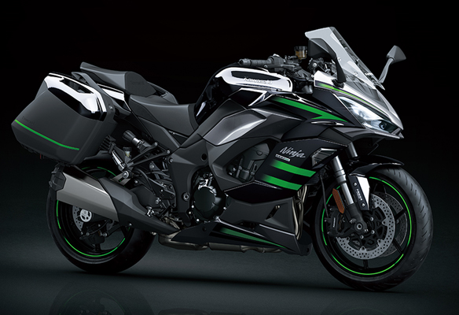

세련된 스포츠 투어러
REFINED SPORT TOURER
2020년에 업데이트된 “Z900”은 이전 모델의 “Exciting & Easy” 콘셉트를 유지하면서 공격적인 “Z sugomi” 스타일링의 다음 단계를 제공합니다. 통합 라이딩 모드(새로 추가된 KTRC 및 파워 모드 결합), 새로운 TFT 컬러 계기판, 스마트폰 연결, all-LED 조명 및 보다 깨끗한 배기가스를 포함한 다양한 고급 기능이 제품의 매력을 높여줍니다. “Z900”의 엔진과 섀시는 매우 잘 조화되어 있어 올-라운더로 적합하며 다양한 라이더의 입맛을 충족시킬 수 있습니다.